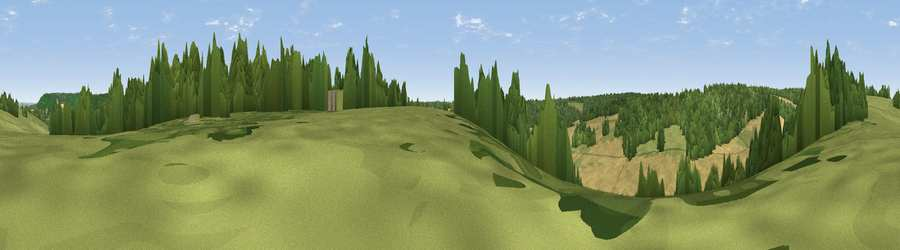

Viewpoint near Little Hampden
#40834 in England · top 69% of its area beats it · near Little HampdenThe view, rendered

A 360° render of this exact spot computed from the terrain model, tree cover and land cover — summer colours, afternoon light, calibrated against photographs of famous viewpoints. Real trees, hedges and buildings will differ in detail.
The panorama
Grey silhouette: terrain skyline in each direction (720 bearings, Earth curvature and refraction included). Dashed green: skyline with trees (+15 m) and buildings (+8 m) as obstacles. Blue strip: how far the ground is visible on each bearing.
Where the view opens
Wedge length = distance to the farthest visible ground on that bearing (vegetation-aware). Rings at 10, 25 and 50 km.
What fills the view
45% cropland · 36% woodland · 19% grassland ·
Angular shares of the visible panorama (visual magnitude), not map area. Landscape diversity 0.46 (0–1 Shannon).
Key numbers
More beautiful places nearby
The staircase of upgrades: each row has a higher view potential than everything closer. Driving times are estimates from straight-line distance, calibrated against real road routing — check an actual route before setting out.
| Place | Direction | Drive | Score |
|---|---|---|---|
| Viewpoint near Little Hampden | NNW · 1 km | ~3 min | 37.3 |
| Viewpoint near Ellesborough | NNW · 3 km | ~8 min | 67.6 |
| Coombe Hill Monument | NNW · 4 km | ~8 min | 75.5 |
| Viewpoint near Woolstone | WSW · 59 km | ~82 min | 76.7 |
| Martinsell viewpoint | WSW · 79 km | ~103 min | 77.3 |
| Broadway Hill | WNW · 82 km | ~106 min | 77.7 |
| Viewpoint near Buriton | S · 85 km | ~109 min | 80.0 |
| Beacon Hill | S · 86 km | ~110 min | 85.8 |
51.72599, -0.74506 · source: screening · position refined by local search. Computed location — check access rights before visiting.